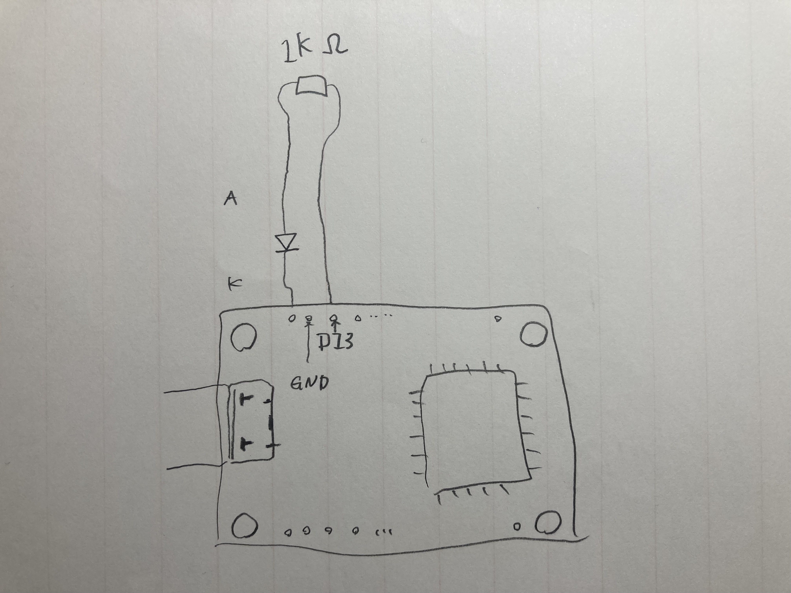
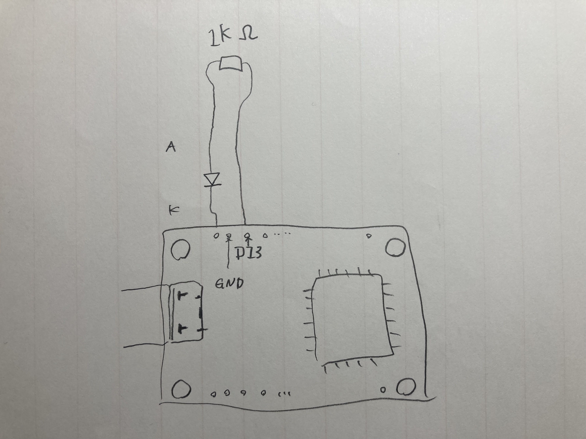

Arduinoでエアコン自動化・水耕栽培
Table of Contents
このプロジェクトは現在進行中で、本稿はいまだに内容が少ないですが、このアカウントで「Arduinoでエアコン自動化・水耕栽培」に関する進捗を随時更新しているので、そちらを見ていただければ最新の情報にたどりつけます。
はじめに
この文章は、マイクロコンピュータを用いて水耕栽培を自動化することを目標にした開発の忘備録で、現在執筆中です。
背景
Arduinoでエアコン自動化
買い物
環境構築
ホスト環境は以下の通りです：
$ lsb_release -a No LSB modules are available. Distributor ID: Ubuntu Description: Ubuntu 18.04.5 LTS Release: 18.04 Codename: bionic
このブログにはGUIのArduino IDEを用いる方法が書かれています。しかし私の環境ではこの方法は少し問題があった(具体的にいうと、以前行なった設定がリブート後に持ち越せなかった)ので、次に紹介するCLIを使うことにしました。エディタはemacsで、c-modeをhookして使いました。
;; ~/.emacs.d/init.el
;; hook c-mode when .ino extension
(add-to-list 'auto-mode-alist
'("\\.ino\\'" . (lambda ()
(c-mode)
)))
ビルドはコマンドラインから行います。
# Makefile DEV = ttyUSB0 CC = /opt/arduino-cli_0.20.2_Linux_64bit/arduino-cli monitor:upload $(CC) monitor -p /dev/$(DEV) upload:compile $(CC) upload --port /dev/$(DEV) --fqbn esp32:esp32:esp32 . compile:device $(CC) compile --fqbn esp32:esp32:esp32 . device: sudo chmod a+rw /dev/$(DEV) new: $(CC) sketch new name
Arduinoで内蔵LEDを点滅させる
Arduinoで外部LEDを点滅させる
 
